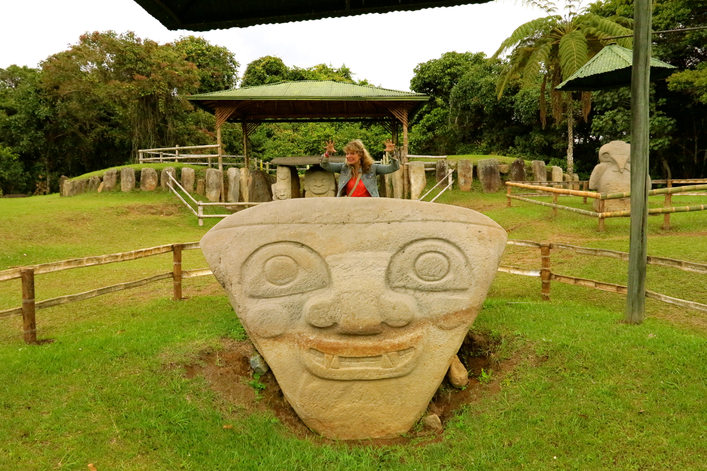

San Agustín es una población y municipio de Colombia en el sur del departamento del Huila. Ubicado a una altura de 1.730 metros sobre el nivel del mar en las estribaciones del Macizo Colombiano.
En este municipio se encuentra la laguna del Magdalena que da nacimiento al río del mismo nombre, siendo este el río más importante de Colombia. En territorio del municipio de San Agustín se encuentra ubicado el parque arqueológico de San Agustín, que es uno de los más importantes espacios arqueológicos de Colombia y fue declarado Patrimonio de la Humanidad por la Unesco en 1995.
San Agustin se caracteriza por ser una mezcla cultural, los residentes nacionales y extranjeros son un ejemplo. El turismo aumenta cada día y las áreas rurales con usos del suelo diversificados ofrecen nuevas y más atractivas formas de recorrer estos lugares, el uso de la bicicleta y la caminata o la cabalgata son lagunas alternativas en la región.
